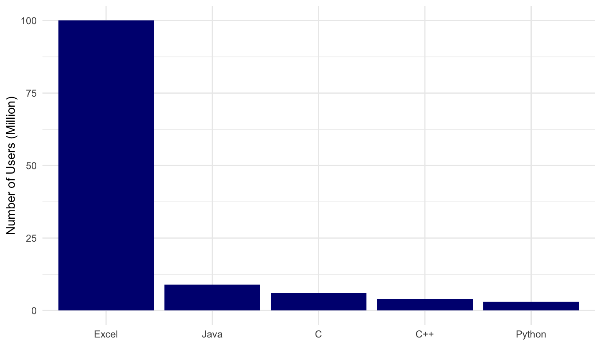

2020-11-04
Doctors make decisions based on symptoms
 Photo by
Photo by New digital healthcare era introduces new decision-making challenges
Volume
- Data collection & storage allows access to huge amounts of medical information
Ubiquity
- Data are available anywhere across geography, social, and economic classes
Latency
- Technology facilitates no delay in access to data
How do you make better health care decisions?
Data-driven decision making!

Emerging field of Data Science
 http://drewconway.com/zia/2013/3/26/the-data-science-venn-diagram
http://drewconway.com/zia/2013/3/26/the-data-science-venn-diagram
Venn Diagram of Data Science v2.0
 Joel Grus via KDnuggets
Joel Grus via KDnuggets
Overall goal is Knowledge Generation
Several Approaches to Knowledge Generation
- New tools allow data interrogation more easily than ever before
World’s most popular programming languages

Your choice in programming language
Data scientists and programmers have strong opinions about the differences in languages
The focus here will be on the R programming language
R
language
Any questions?
R is a language

R has values
- 1
- “North Carolina”
- “2020-04-08”
R has objects
- A name without quotes
- Assigned using
<-(looks like an arrow pointing left) - Can be a value, object, or function result
Try assigning an object
Assign an object; remember, no quotes on name
name <- 4Return that object by typing its name
name
Try this in the code chunk below, then hit “Run Code”
R has functions
- A name without quotes
- Followed by () to run the function
- Optional arguements: values, objects, or function results
round(x, digits = 3)
Try this in the code chunk below, then hit “Run Code”
round(pi, digits = 3)
Which of these are numbers?
Which of these will work?
Suppose one <- 1
Try it for yourself!
one <- 1
Data are stored in tables and dataframes
Data stored in a dataframe are conceptually equivalent to a spreadsheet with rows and columns
This is a sample from the proteins dataset
Data are stored in tables and dataframes
Data stored in a dataframe are conceptually equivalent to a spreadsheet with rows and columns
This is a sample from the proteins dataset
Extract or create new objects
You can call a single part of the data frame
proteins$gene_name_alt
## # A tibble: 12,105 x 1 ## gene_name_alt ## <chr> ## 1 ACF ASP ## 2 CPAMD5 FWP007 ## 3 CPAMD9 ## 4 A3GALT2P IGBS3S ## 5 A14GALT A4GALT1 ## 6 ADRACALA GL003 ## 7 ACSF1 ## 8 DAC ## 9 KAT2 ## 10 KIAA1048 ## # … with 12,095 more rows
Extract or create new objects
Write the R code required to extract a variable from the proteins dataset:
Remember, the format is: proteins$gene_name_alt
Extract or create new objects
You can also save a part of the dataframe as an object for later use
gene_name_alt <- proteins$gene_name_alt
In the code chunk below:
1. On the first line, write the R code to save a single column to a new object
2. On the second line, type the object name - this will print out the new object
3. Run the code
R
Integrated Development Environment
Any questions?
R

Rstudio
Integrated Development Environment

R
Markdown
Any questions?
R Markdown
An authoring format for Data Science. # R
# R
Packages Any questions?
R Packages
The R language contains thousands of functions, data sets, and help pages.
- but only a few hundred are included when you download R
This is called ‘Base R’
The other functions, data sets, and help pages are grouped into collections known as packages that you can choose to download or not download.
“Verbs” (i.e. functions) act on data
do_this(to_that)
do_this(to_that, using_these)
We talked about functions before (e.g. round(pi, 3))
Functions are the power of using R
Packages contain functions, documentation, data
CRAN
- Most R packages are stored on CRAN, alongside R.
- Think of them as optional extensions of the R language.
 Image by daroczig
Image by daroczig
Using Packages (Part I)
install.packages("tidyverse")
Do this 1 time per computer.
This command will install the package into your instance of R, whether it is local, on a server, or in the cloud. This is required to use the functions in a package.
Tidyverse
Tidyverse Pop Quiz!
The tidyverse contains the following packages (ggplot2, dplyr, tidyr, readr, purrr, tibble, hms, stringr, lubridate, forcats, DBI, haven, httr, jsonlite, readxl, rvest, xml2, modelr, tidyverse).
How would you install them?
Tidyverse Pop Quiz!
install.packages("ggplot2") install.packages("dplyr") install.packages("tidyr") install.packages("readr") install.packages("purrr") install.packages("tibble") install.packages("hms") install.packages("stringr") install.packages("lubridate") install.packages("forcats") install.packages("DBI") install.packages("haven") install.packages("httr") install.packages("jsonlite") install.packages("readxl") install.packages("rvest") install.packages("xml2") install.packages("modelr") install.packages("broom")
Better:install.packages("tidyverse")
An R package that serves as a short cut for installing and loading the components of the tidyverse.
Using Packages (Part II)
1.install.packages("tidyverse")
Do this 1 time per computer.
2.library(tidyverse)
Do this 1 time per session
Using Packages (Part II)
Downloading a package isn’t the same as using it.
If you’d like to use an R package, you need to tell R.
You do that by running the command library, again followed by parentheses and the package name.
library(package_name)
This command loads all of the functions, data sets, and help pages that come with the package into your R session, where you can use them.
If you close R, you’ll need to reload the package with library() if you want to use it again.
Using Packages (Part III)
The setup chunk is always run once before anything else

Tidyverse
Tidyverse is one suite of tools for data science
Exploratory Data Analysis

Tidyverse Basic Principles
IMPORT (readr):
- read_csv()
- read_delim()
TIDY & TRANSFORM (dplyr):
- mutate() adds new variables that are functions of existing variables
- select() picks variables based on their names.
- filter() picks cases based on their values.
- summarise() reduces multiple values down to a single summary.
- arrange() changes the ordering of the rows.
VISUALISE (ggplot): creating graphics, based on ‘The Grammar of Graphics’
- aes()
- geom_x() + layers
MODEL (broom):
- tidy(), glance(), augment()

magrittr package

magrittr package
magrittr package by Stefan Milton Bache developed the concept of the pipe, which is used heavily in the tidyverse

The Pipe
The “pipe” is a sequence of functions, that are sequentially applied to an object
wakeup(self) %>%
put_on("clothes") %>%
eat("breakfast") %>%
go(to = "work")
Alternative nested code:
go(eat(put_on(wakeup(self), "clothes"), "breakfast"), to = "work")
The Pipe (Quiz I)
What does this code do?
wakeup(self) %>%
put_on("clothes") %>%
eat("breakfast") %>%
fmk() %>%
go(to = "work")
The Pipe (Quiz II)
What does this code do?
morning_routine <- wakeup(self) %>%
put_on("clothes") %>%
eat("breakfast") %>%
fmk() %>%
go(to = "work")
The Pipe (Quiz III)
What does this code do?
proteins %>%select(length, gene_name_alt) %>%group_by(gene_name_alt) %>%summarize(mean(length))
Writing code IS NOT like drawing an owl

Writing code IS a step-wise process

Concluding Thoughts
Data science enables
Data science enables data-driven information gathering and hypothesis generation
– Scientific Research
– ReviewsData science enables the ability to ask new types of questions
Process-centric, not necessarily question-centric
Making things computable makes them actionable at zero marginal cost.
Workflows save time, achieve reproducibility
Cheatsheet Resources
Google Resources
R4DS Resources
Tidybiology Website
Tidybiology Videos
Acknowledgements
Co-Instructor
- Akshay Bareja, D.Phil.
Inspiration, ideas, packages, code
- R4DS (Garrett Grolemund and Hadley Wickham)
- Mine Çetinkaya-Rundel (datasciencebox.org)
- Chester Ismay and Albert Y. Kim (Modern Dive)
- Garrett Grolemund (Remastering the Tidyverse)
- Tidyverse devs and community
- Rstudio